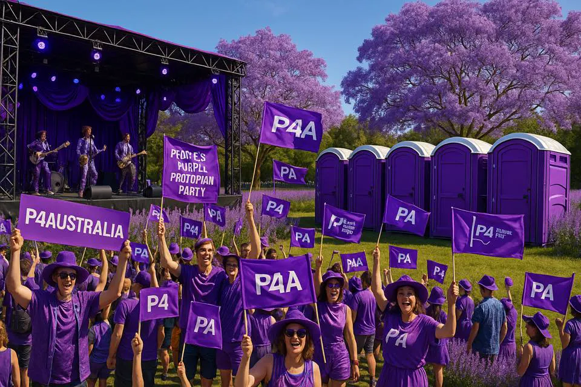

One scene
Straight to camera in the most ordinary place possible. The classic is mid-piss. Some topics earn the quiet version instead: same format, no gag, because family violence and fallen mates are nobody's toilet joke.

Public spark / open format
Twinkle is the camera-rant lane: ordinary gripes, plain language, public-toilet humour, then a clean doorway into the serious room underneath. The format is public property. We seed the connections; the common sense of clever people does the rest.
The rule that governs the lane
This comes first, before a single gripe, because it is what keeps the lane honest. The campaign can sprawl as wild as the internet wants; the ledger marks the edge of what P4A actually stands behind. Every claim is a spark, but a spark only earns a place on the ledger if it points to certainty: the claim checks out against the Truth Engine, the joke punches at machinery not people, and the drop is honest about what is proposed versus proven. Endorsed clips are recorded on the Civic Ledger with the seed they grew from and the verdict reasons. Rejections are published too, with reasons: every verdict is a precedent, and precedent by precedent the limit of policy gets discovered in public, somewhere between ethical overcompliance and the grey zone. This pipeline is described before it is built, like everything on this workbench.
The format
Strong constraints, infinite variation. Every clip is recognisably the same species, and every one of them is somebody else's to film.
Straight to camera in the most ordinary place possible. The classic is mid-piss. Some topics earn the quiet version instead: same format, no gag, because family violence and fallen mates are nobody's toilet joke.
Something a stranger at the pub already says unprompted. If nobody says it unprompted, it is a room, not a Twinkle.
The fix gets said in one breath before the flush. If it needs a second breath, that breath lives in the follow-through room, not the clip.
The joke aims at systems, forms, deals and doors. Never at a person, never at anyone's service, culture or grief.
Every claim is a spark, but a spark only earns a place on the ledger if it points to certainty: sources, rooms and receipts that can be checked, and survive the checking.
Ours are worked examples. Take a seed, use your place, your numbers, your accent. The pattern is the gift, not the brand.
Worked examples
The first four clips show the shape: short enough to land as a joke, honest enough to open a practical room.
A commuter gripe that opens into public assets, long contracts and fair-term infrastructure deals.
02A trolley-shock rant that opens into fuel, freight, waste, growing, shared tables and resilience.
03A household-budget groan that opens into risk prevention, mutual care and lawful pooling.
04A work-life rant that opens into Try Everything Once and a less brittle workforce.
Open seeds
Each seed pairs things already sitting in the public consciousness. The enlightenment is the connection; the anger and the wit are yours.
Renter maths, then modelling every housing fix in public. No single magic pill, the mix that works.
06Rebate-cliff shock, then every energy deal on a public register and suburbs owning their own power.
07Gap-fee pain, then care hours funded and AI eating the paperwork instead of the appointment.
08No gag, said straight. A woman a week, then somewhere safe to go tonight and his behaviour on the hook.
09Fees so high the second pay packet vanishes, then care funded like the infrastructure it is.
10Up every February and August, automatically. Then taxes and donations on the same public rail.
11Grey-shed deals in the dark, then local twins: public terms and a slice of the compute.
12Breach fatigue, then holding your own data and lending it out on your terms.
13Resources leave for a pittance, the profits buy the megaphones, then every deal public with an expiry date.
14Outage roulette, then emergency comms with a local fallback no company can drop.
15The big receipt next to the waiting list, in public, before signing. Peace-first arithmetic.
16The revolving door, then a three-column public register with a cooling-off clock.
17Year-late disclosure, then donations visible at the speed of the transfer itself.
18Venue whiplash, then aiming the whole Games surge at a legacy that outlives the closing ceremony.
19Canada signed. New Zealand signed. Then old agreements reviewed fairly in the Treaty Atlas.
20Official silence, then a public channel where weird claims get checked, not laughed off.
21A cooked calendar, then planning on nature's clock with public risk models.
22The quiet one. The joke stops halfway on purpose, then care that starts the day you ask.
Twinkle should be quick, funny and shareable. The deeper argument belongs one click away.
No fake certainty. Every gripe should point toward sources, tools, ledgers or rooms that can be checked.
Gear can help the public lane feel real: stickers, shirts, mugs, signs and field-kit objects for local crews.